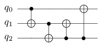
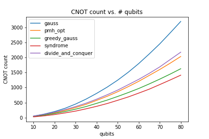
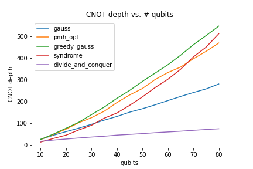

CNOT circuit synthesis
Problem
Linear boolean operators form a common class of reversible circuits corresponding to circuits that can be implemented using only CNOT gates. Even though it may seem restrictive, they appear almost everywhere in quantum circuits when dealing with parity rotations (or phase polynomials), or even syndrom detection for error correction.
These operators can in fact be represented in an implementation-independent manner via a \(n\times n\) boolean matrix representing parities carried by qubits after application of the operator.
Consider for instance the following CNOT circuit:


This circuit simply permutes the computational basis. We describe the output boolean value of each qubit depending on the input values of the qubits.
For this precise circuit, we have:
\(q'_0 = q_1 \oplus q_2\)
\(q'_1 = q_2\)
\(q'_2 = q_0 \oplus q_1 \oplus q_2\)
which can be equivalently described using the following table:
Each row describes the output of the corresponding qubit.
The problem of circuit synthesis consists in, starting with a high-level data structure (here, a table), produce a quantum circuit implementing the described operator.
Synthesis
The method qat.synthopline.linear_operator_synthesis() takes a table as input and outputs a CNOT circuit implementing it.
It implements various state of the art algorithms to perform this task (see documentation of the method for more details).
For instance, we can run it on the above example:
import numpy as np
from qat.synthopline import linear_operator_synthesis
table = np.array([[0, 1, 1],
[0, 0, 1],
[1, 1, 1]])
circuit = linear_operator_synthesis(table)
for name, params, qbits in circuit.iterate_simple():
print(name, qbits)
CNOT [1, 2]
CNOT [2, 1]
CNOT [0, 2]
CNOT [2, 0]
The output circuit is in fact equivalent to our initial circuit. In some cases, re-synthesising the circuit can lead to quite large optimizations.
Notice that some of the algorithms wrapped in this method are architecture aware, meaning that they can produce circuits that are compliant with some qubit connectivity constraint specified as a graph. This is the case of the steiner_gauss method.
import numpy as np
import networkx as nx
from qat.synthopline import linear_operator_synthesis
table = np.array([[0, 1, 1],
[0, 0, 1],
[1, 1, 1]])
# Let us consider a simple path graph of length 3 (LNN architecture)
graph = nx.generators.path_graph(3)
circuit = linear_operator_synthesis(
table, method="steiner_gauss",
graph=graph, ham_path=list(range(3))
)
for name, params, qbits in circuit.iterate_simple():
print(name, qbits)
CNOT [1, 0]
CNOT [2, 1]
CNOT [1, 0]
CNOT [0, 1]
CNOT [1, 2]
CNOT [1, 0]
CNOT [2, 1]
Notice that all the gates are compliant with the input connectivity (a line 0 - 1 - 2). Of course, this comes at a price, and this circuit has more gates than the previous one.
The method qat.synthopline.linear_synthesis.extract_linear_operator() can be used to check (or build) linear operators:
import numpy as np
from qat.synthopline import linear_operator_synthesis
table = np.array([[0, 1, 1],
[0, 0, 1],
[1, 1, 1]])
circuit = linear_operator_synthesis(table)
from qat.synthopline.linear_synthesis import extract_linear_operator
table_2 = extract_linear_operator(circuit)
assert np.allclose(table, table_2)
Additionally, the method qat.synthopline.linear_synthesis.random_linear_operator() provides a basic interface to quickly generate a random linear operator. This is useful to quickly generate benchmarks, or test synthesis methods.
Benchmarks
To give you a quick idea of the performance of various algorithms accessible via the linear_operator_synthesis() method, we have run some benchmarks.
This benchmark only considers methods gauss, pmh_opt, syndrome, greedy_gauss, and divide_and_conquer for a number of qubits ranging from 10 to 80. Each point is generated by synthesizing 20 random operators obtained via the random_linear_operator(). Variance is omitted since it is not significant.


As you can see, on typical instances, syndrome performs better than any other method regarding CNOT count. As expected, divide_and_conquer performs (way) better in terms of circuit depth. Keep in mind that syndrome might be a bit more time costly than the other methods. The faster method remains greedy_gauss, which happens to perform quite good in terms of CNOT count (it is the default method).